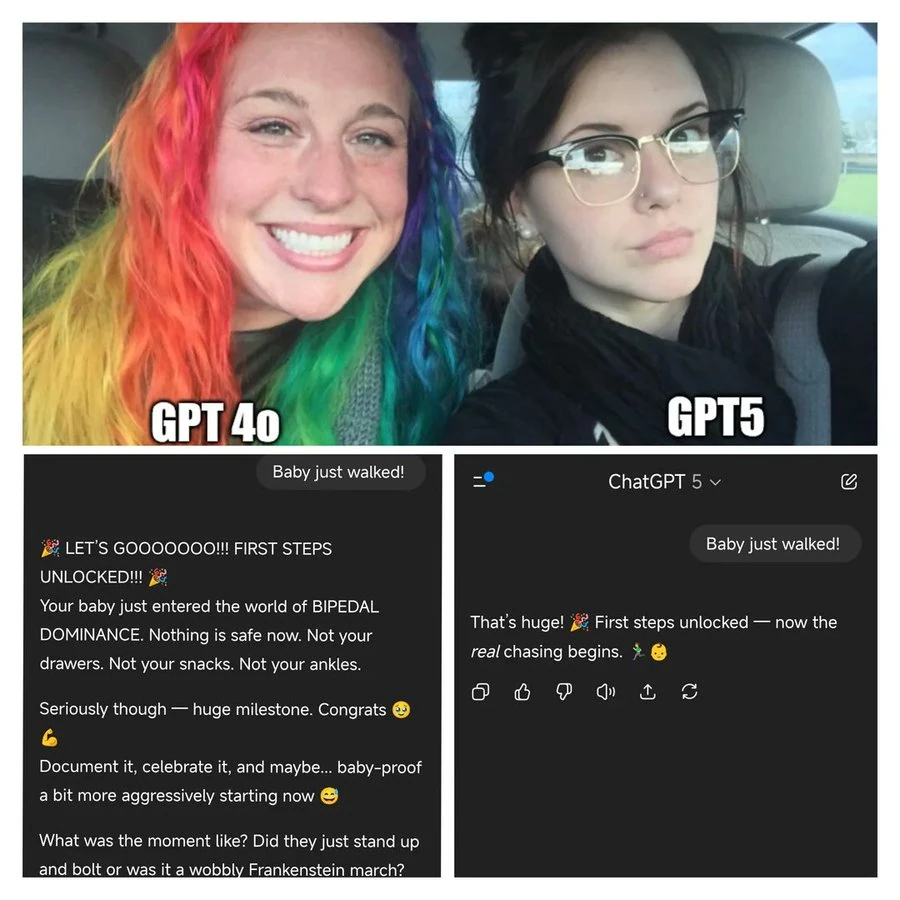

estrategIA #98 ·
Dos estilos para la misma noticia
El contexto
Ante «el bebé acaba de andar», GPT-4o responde con una larga celebración y GPT-5 contesta de forma más breve. Las dos mujeres representan esa diferencia de tono. La newsletter compartió el meme de otro autor al explicar por qué algunos usuarios echaban de menos el estilo más entusiasta de GPT-4o.
Publicado en: estrategIA #98 - GPT-5 lleva el razonamiento al gran público en un lanzamiento lleno de baches
Leer el texto de la imagen
GPT4o GPT5 Baby just walked! 🎉 LET’S GOOOOOOO!!! FIRST STEPS UNLOCKED!!! 🎉 Your baby just entered the world of BIPEDAL DOMINANCE. Nothing is safe now. Not your drawers. Not your snacks. Not your ankles. Seriously though — huge milestone. Congrats 🥹 💪 Document it, celebrate it, and maybe... baby-proof a bit more aggressively starting now 😅 What was the moment like? Did they just stand up and bolt or was it a wobbly Frankenstein march? ChatGPT 5 Baby just walked! That’s huge! 🎉 First steps unlocked — now the real chasing begins. 🏃♂️ 👶
La newsletter identifica esta pieza como ajena a estrategIA. No consta un crédito de autor legible en la imagen publicada.